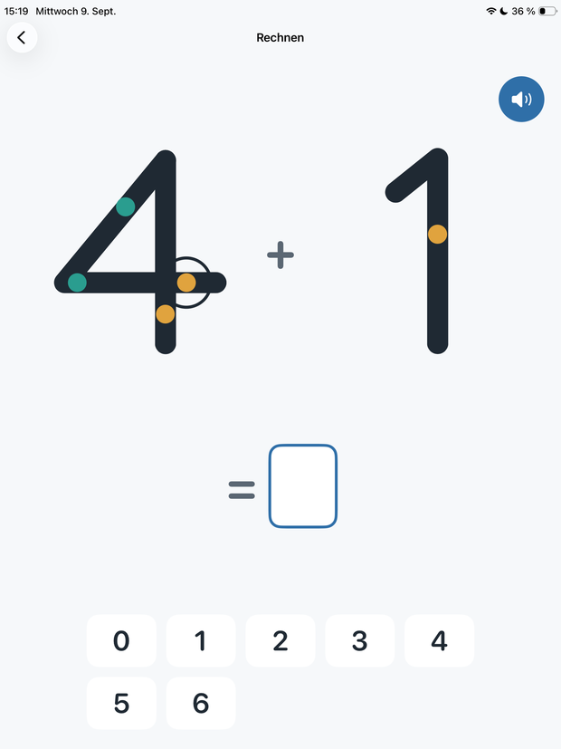
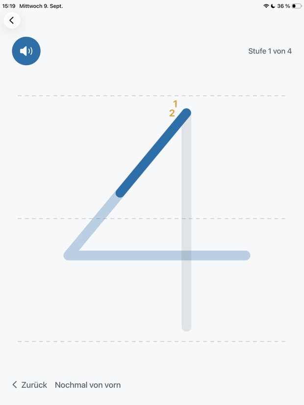
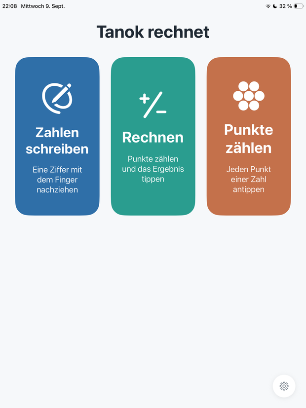
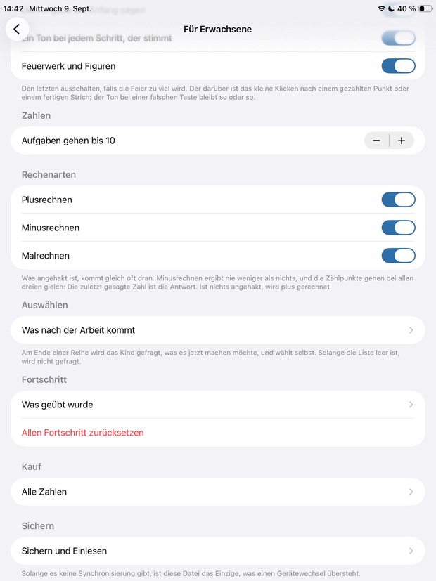

Eine Ziffer mit dem Finger nachziehen, die Punkte einer Zahl abzählen, plus, minus und mal. Eine ruhige App fürs iPad, die nichts will ausser Üben.
Für iPad · Deutsch, English, Español, Français, Italiano




Eine Ziffer wird mit dem Finger oder dem Stift nachgezogen. Startpunkt, Richtungspfeil, Strichnummern und zuletzt die Kontur selbst verschwinden nach und nach — in der Reihenfolge, in der ein Kind sie nicht mehr braucht.
Plus, minus und mal, alle drei über dieselben Punkte: beim Plusrechnen vorwärts über beide Zahlen, beim Minusrechnen rückwärts, beim Malrechnen in Schritten. Die zuletzt gesagte Zahl ist die Antwort.
Eine Zahl, ihre Punkte, und nichts, was danach auszurechnen wäre. Der Schritt unter den beiden anderen: dass die Form „4“ vier Dinge bedeutet und dass man das durch Zählen herausfindet.
Bis fünf trägt jede Zahl einen Punkt je Einheit, ab sechs kommen geringelte Punkte dazu, die doppelt zählen. Das Kind tippt sie der Reihe nach an und die App zählt laut mit.
Von der vollen Kontur bis zur blossen Schreiblinie, von Punkten auf jeder Zahl bis zu den nackten Ziffern. Jede Stufe lässt sich einzeln einstellen.
Wenn eine Ziffer an mehreren verschiedenen Tagen sauber sass, gibt es beim nächsten Mal weniger Hilfe. Fünf Treffer in einer Minute sind nicht dasselbe wie fünf Treffer an fünf Tagen.
Eine 1 sitzt lange vor einer 8, und beide bleiben dort, wo sie hingehören. Wer das nicht will, verschiebt jede Stufe von Hand.
Keine Uhr, keine Punktzahl, kein Gegner, kein Verlieren. Ein falscher Strich wackelt kurz und ist vorbei. Am Ende ein Feuerwerk — und wenn das zu viel ist, schaltet man es aus.
Einstellungen und der ganze Fortschritt passen in eine Datei. Beim Wechsel auf ein neues iPad geht nichts verloren.
Das ist keine Nebensache, sondern der Punkt.
Alles bis sechs ist gratis
Die Ziffern 0 bis 6 schreiben, die Punkte von 1 bis 6 zählen und jede Aufgabe, die unter sieben bleibt: kostenlos, mit allen vier Stufen und dem ganzen Fortschritt. Ein einmaliger Kauf fügt 7, 8 und 9 hinzu und den Zahlenraum darüber — kein Abonnement, mit Familienfreigabe, hinter einer Rechenaufgabe für Erwachsene.